扉页
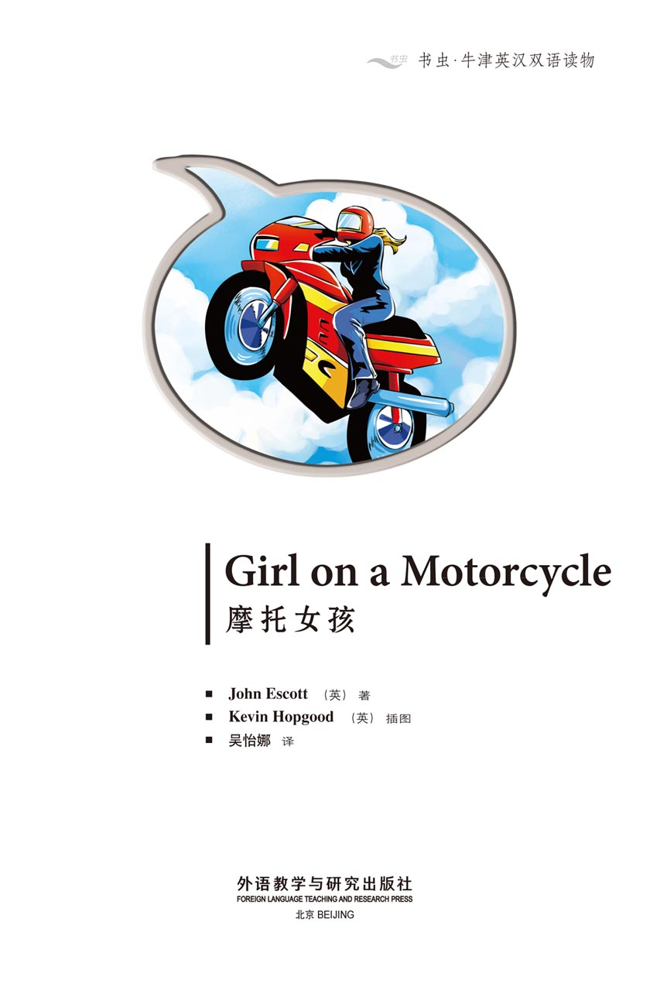
版权页
京权图字：01-2013-7800
Published by arrangement with Oxford University Press for sale in the People's Republic of China only and not for export therefrom. This edition is for sale in the mainland of China only, excluding Hong Kong SAR, Macao SAR and Taiwan.
© Oxford University Press 2008
Oxford is a registered trademark of Oxford University Press
图书在版编目（CIP）数据
摩托女孩：英汉对照／（英）埃斯科特（Escott, J.）著；（英）霍普古德（Hopgood, K.）绘；吴怡娜译．—北京：外语教学与研究出版社，2013.11
（书虫·牛津英汉双语读物）
书名原文：Girl on a motorcycle
ISBN 978-7-5135-3774-2
Ⅰ．①摩… Ⅱ．①埃…②霍…③吴… Ⅲ．①英语—汉语—对照读物②短篇小说—英国—现代 Ⅳ．①H319.4：I
中国版本图书馆CIP数据核字（2013）第272340号
出版人 蔡剑峰
责任编辑 文雪琴
封面设计 蔡 颖
出版发行 外语教学与研究出版社
社 址 北京市西三环北路19号（100089）
网 址 http://www.fltrp.com
版 次 2013年12月第1版
书 号 ISBN 978-7-5135-3774-2
制售盗版必究 举报查实奖励
版权保护举报电话：（010）88817519
内容简介
内容简介
肯尼正在乘公共汽车横穿美国前往旧金山。这是一段漫长的旅程，所以有时他会下车，在汽车旅馆住上一夜。
一天晚上，他住在加利福尼亚一个小镇的汽车旅馆里——离洛杉矶不远。他从房间下楼去吃东西时，看见了一个女孩：骑着摩托车，有一头金色长发。他觉得自己认识她，她是某个名人吗？
然后，第二天早上，他从新闻里看到在洛杉矶发生的一起超市劫案。警方正在寻找一个人：这个人骑摩托车，有一头金色长发……
GIRL ON A MOTORCYCLE
GIRL ON A MOTORCYCLE
Kenny is going across America by bus to San Francisco. It is a long way, so he stops sometimes and stays the night in a motel.
One evening he stays in a motel in a little town in California – not far from Los Angeles. When he comes down from his room for something to eat, he sees a girl – a girl on a motorcycle, with long blond hair. He thinks he knows her – is she famous?
Then, the next morning, he sees the news about a supermarket robbery in Los Angeles. The police are looking for somebody – somebody on a motorcycle, with long blond hair...
目录
1 Is there a motel?
1
Is there a motel?
Kenny is going across America by bus. One evening in summer, his bus arrives in a little town in California.
'I want to stop here tonight,' says Kenny to the bus driver. 'Is there a motel, do you know?'
'Yes,' says the bus driver. 'There's a nice motel across the river. It's not expensive.'
'Is there a bus to San Francisco tomorrow?' asks Kenny.
'Yes,' says the bus driver, 'there's a bus every day.'
Kenny gets off the bus with his bag.

2 Give me the money!
2
Give me the money!
In a street in Los Angeles, somebody is robbing a security guard outside a supermarket. The robber is sitting on a motorcycle and has a gun.
'Give me the money!' the robber tells the security guard. 'OK, OK!' says the security guard, and gives the robber the money.
Then the robber rides away – but a camera is taking pictures.
After the robbery, the supermarket manager phones the police.
'Yes,' he says. 'A robbery... yes, long blond hair, and with a motorcycle... a man or woman? We don't know... yes, we have some pictures... OK! Quickly.'
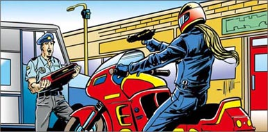
3 Room twenty-three
3
Room twenty-three
In the little town, fifty kilometres away from Los Angeles, Kenny goes into the motel and asks for a room.
'Room twenty-three,' says the man at the desk. He gives Kenny a key.
'Thank you,' says Kenny. And he goes up to his room.
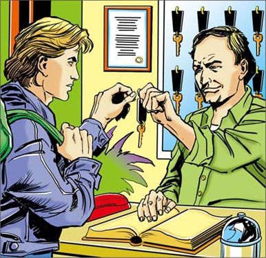
An hour later, Kenny comes down to eat.
'I'm hungry,' he thinks.
He sees a girl arrive on a motorcycle. She walks to the front desk, and the man gives her a key.
'Room seventeen,' says the man at the desk.
'I think I know her face,' thinks Kenny. 'Is she somebody famous?'
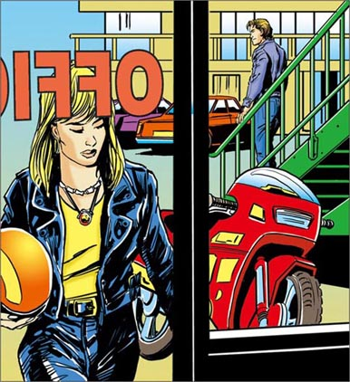
4 Is it her?
4
Is it her?
Early the next morning, Kenny puts on the TV in his room. A news-reader is talking about the supermarket robbery. There are some pictures from the supermarket camera.
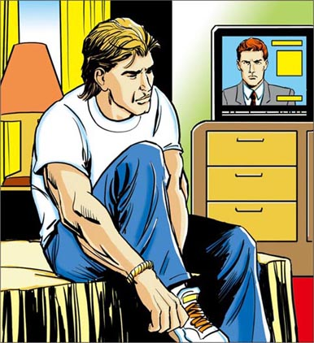
Kenny watches the news.
'The robber is somebody with long blond hair, and with a motorcycle,' says the news-reader.
Suddenly, Kenny remembers the girl at the motel desk. 'Is it her?' he thinks. 'Is she the robber?'
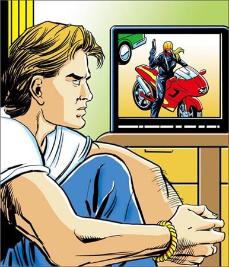
5 Can I sit here?
5
Can I sit here?
He goes for breakfast. The girl is eating her breakfast at a table near the window. Kenny looks at her. 'Is it her?' he thinks. 'I think I know her, but...' He walks across to her table.
'Can I sit here?' he asks.
The girl looks up. 'Well... OK,' she says.
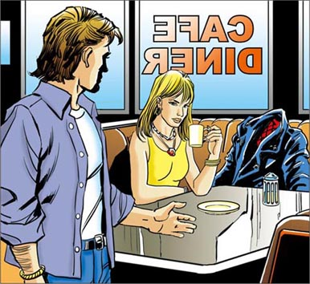
Kenny sits down. 'My name's Kenny,' he says.
'Pleased to meet you,' she says. 'I'm Mel.'
'Where are you from?' asks Kenny.
'San Francisco,' says Mel. 'I'm going there later this morning. Where are you from?'
'Boston,' says Kenny. 'I'm going across America by bus. And I'm going to San Francisco later this morning, too.'
'Are you?' the girl says. 'I don't like buses. I like motorcycles. Look, excuse me. I need to make a phone call.'
She gets up and leaves the room.
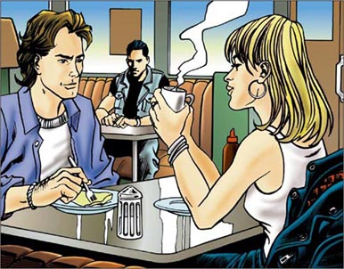
6 Not the police
6
Not the police
A young man near the door is watching Mel.
'Why is he watching her?' thinks Kenny. 'Does he know her face, too? Is he thinking she's the girl from the robbery, too?'
Kenny goes to sit next to the young man.
'Hi,' he says. 'My name's Kenny Muir.'
'Hi,' says the young man. 'I'm... Ned.'
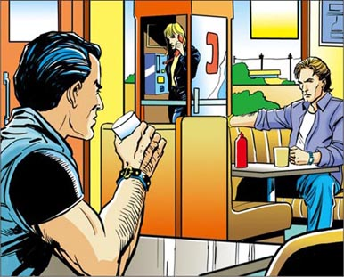
They begin talking. Kenny tells Ned about the news of the robbery on TV. He looks across at Mel. 'Are you thinking that's the same girl?' he asks Ned.
Ned looks across at her. 'I – I don't know,' he says. 'Perhaps it is.'
'What can we do?' says Kenny. 'She's leaving soon. Let's phone the police. I think it's her.'
'No!' Ned says quickly. 'Not the police. Wait...'
Kenny looks carefully at him. 'What's the matter? Are you... afraid of something?' he asks.
'No, but... perhaps she's got a gun!' says Ned.
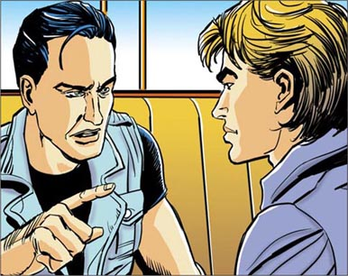
7 Perhaps I'm wrong
7
Perhaps I'm wrong
'Is it her?' thinks Kenny. 'I want to know. Perhaps the money from the robbery is in her room.'
Kenny goes upstairs. Suddenly he sees the girl again. She is coming out of room seventeen. Kenny watches her. She locks her door and goes downstairs.
'How can I get into her room?' he thinks.

Then Kenny sees a woman working in the motel.
'Excuse me,' says Kenny. 'Can you open the door of my room? My key's in the car. It's room seventeen.'
'Yes, of course,' she says, and opens the door of room seventeen.
'Thank you,' says Kenny, and he goes into the room.
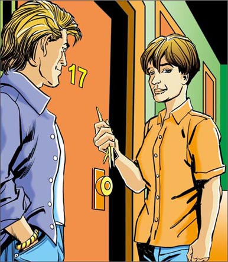
Kenny searches the room, but he cannot find the money from the robbery.
'Perhaps I'm wrong about her,' he thinks.
Then he hears somebody opening the door with a key.
It's Mel!
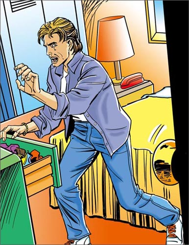
8 I must get away
8
I must get away
Kenny runs into the bathroom. A minute later he hears Mel talking into the phone.
'Hi, Fran,' says Mel. 'No, I'm at the motel... No, I'm leaving in an hour... Yes, OK...'
Kenny looks out carefully from the bathroom. He cannot get to the door, but he can get to the window. He moves quickly.
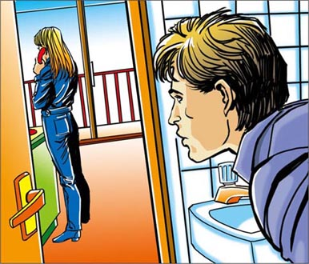

Mel puts down the phone. Kenny watches her through the window.
'I must get away from here!' he thinks.
Kenny cannot go back into room seventeen, but he can open the window to room eighteen.
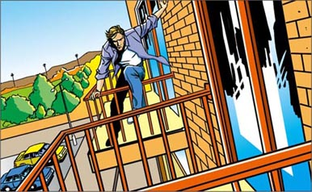
9 You're the robber!
9
You're the robber!
Kenny climbs into room eighteen. There is nobody there. He goes across to the door. But then he sees something.
'What's that?' he thinks. 'Is it... a wig? It is. It's a blond wig!'
Kenny searches the room.
'Here's a black motorcycle coat,' he says to himself. 'And what's this in this bag? The money from the robbery!'
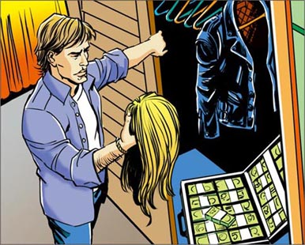
Kenny hears somebody coming. He wants to get out of the room, but he cannot.
Ned comes into the room. He sees Kenny.
'What are you doing in my room?' says Ned.
Then he sees the blond wig and the money. He looks at Kenny again.
'You know!' says Ned.
'Yes, I know!' says Kenny. 'You're the Los Angeles supermarket robber!'
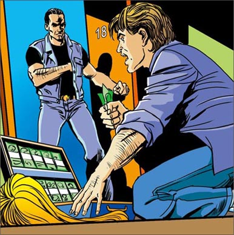
Suddenly, Ned takes a gun from his coat.
'Don't move!' he says. And he takes the bag from Kenny.
'You can't get away,' says Kenny.
'Yes, I can,' says Ned.
He hits Kenny on the head, then he locks him in room eighteen.
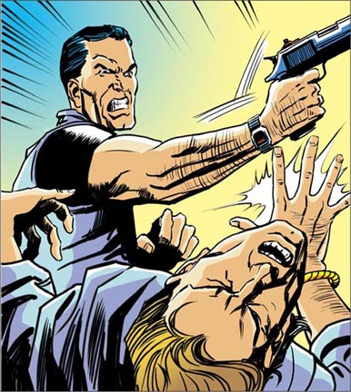
10 I can't swim!
10
I can't swim!
A minute later, Mel is looking across at the river from her room. Suddenly, she sees a man running.
'What's the matter with him?' she thinks. 'Why is he running?'
Then she sees Kenny come out of the next room.
'Th – that man!' says Kenny. 'He's the Los Angeles supermarket robber! Stop him, somebody!'
Ned hears him and looks up. Then he gets on his motorcycle and drives off quickly.
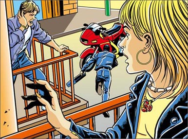
'I can stop him!' says Mel.
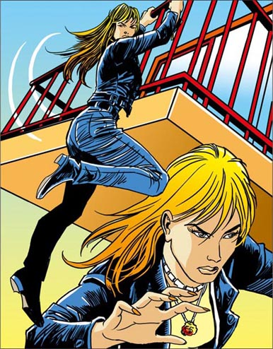
She climbs down from her room. She runs around the motel, gets on her motorcycle and goes after Ned.
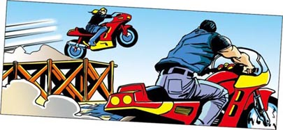
Mel rides her motorcycle quickly towards the river. When she gets to the river, she jumps across the river on the motorcycle, and stops in front of Ned. He cannot stop, and his motorcycle goes into the river.
'Help! Help!' he cries. 'I can't swim!'
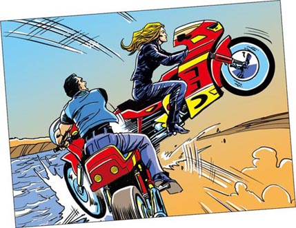
11 Can we go slowly, please?
11
Can we go slowly, please?
Some people help Ned out of the water. More people are coming from the motel. Kenny runs across to Mel.
'Are you OK?' he asks her.
'Yes, I'm OK,' she says. 'Are you all right?'
'Yes,' says Kenny. 'I'm all right.'
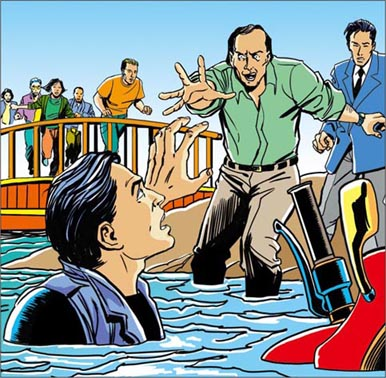
Soon after, the police arrive and take Ned away. Kenny tells a policeman his story. Then Mel tells the policewoman her story.
'Do I know your face?'the policewoman asks Mel. 'Are you famous?'
Mel laughs. 'Perhaps you do,' she says. 'I'm on TV sometimes.'
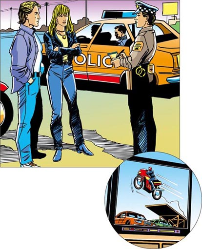
'Now I remember you,' Kenny says to Mel. 'You're Mel Palmer, the famous Stunt Girl! I see you on 'Stunt Girls, USA', on TV sometimes.'
Mel smiles. 'Yes, that's me,' she says. 'Now, do you want to come to San Francisco on my motorcycle, or do you want to go on the bus?'
'I'm coming with you!' says Kenny, laughing. 'But can we go slowly, please?'
GLOSSARY 词汇表
GLOSSARY
词汇表
bathroom n. the room where you can bath and wash 浴室，卫生间
blond adj. a yellow-white colour （头发）浅黄色的，金色的
climb v. go up or down using hands and feet （手脚并用地）攀登，爬
famous adj. a famous person is someone who many people know 著名的，出名的
gun n. a thing that shoots bullets to kill people 枪
lock v. use a key in a door so it cannot open 锁住
manager n. someone who controls a business （公司等的）经理，管理者
motel n. a building where you can pay to stay in a room 汽车旅馆
news n. a TV or radio programme that tells about the things that happen 新闻
news-reader n. someone who reads the news 新闻播音员
police n. the men and women who catch criminals 警察
rob v. take something that is not yours 抢劫，打劫
robber n. someone who takes something that is not theirs 盗贼，抢劫者
search v. look carefully for something 寻找；搜查
stunt n. something dangerous and exciting 特技表演
swim v. move your body through water using your arms and legs 游泳
wig n. false hair 假发
ACTIVITIES 阅读练习
Girl on a Motorcycle
ACTIVITIES
阅读练习
ACTIVITIES
Before Reading
1 Look at the picture on the cover of the book. Now answer these questions.
1）Do you think the story is
a □ funny?
b □ sad?
c □ exciting?
d □ frightening?
2）Where do you think the story happens?
a □ China.
b □ America.
c □ England.
d □ Italy.
2 Read the back cover of the book. Now answer these questions.
1）Do you think Kenny is a policeman?
2）Do you think the robber shoots Kenny?
3）Do you think the girl is the robber?
ACTIVITIES
While Reading
1 Read Chapters 1-3, then answer these questions.
1）How often do buses go to San Francisco?
2）Where is someone robbing a supermarket?
3）The supermarket manager says, 'Yes, we have some pictures.' How does he have pictures of the robber?
4）What is Kenny's room number in the motel?
5）How does the girl in room seventeen arrive at the motel?
2 Read Chapters 4-5. Now answer these questions.
a）Who
... is talking about the robbery on TV?
... does Kenny remember who has long blond hair?
b）Where
... is the girl eating her breakfast?
... are Mel and Kenny going later that morning?
3 Read Chapters 6-7. Are these sentences true (T) or false (F)?
1）Someone is watching Mel.
T □／F □
2）Ned wants to phone the police.
T □／F □
3）Kenny opens Mel's room with his key.
T □／F □
4 Read Chapters 8. Now answer these questions.
1）Mel comes back to her room. Where does Kenny go first?
2）Who is Mel talking to on the phone?
3）What is the first thing Kenny sees in room eighteen?
4）What is in the bag?
5 Read Chapters 9-10. Who says or thinks these words?
1）'What are you doing in my room?'
2）'You can't get away.'
3）'Why is he running?'
4）'He's the Los Angeles supermarket robber!'
5）'I can stop him!'
6 Before you read Chapters 11, can you guess what happens?
1）Ned kills Mel.
YES □／NO □
2）Mel falls off her motorcycle into the river.
YES □／NO □
3）Mel stops Ned.
YES □／NO □
4）Kenny stops Ned.
YES □／NO □
5）Ned falls into the river.
YES □／NO □
ACTIVITIES
After Reading
1 Put these twelve sentences in the right order.
a □ Kenny sees the girl eating her breakfast.
b □ Kenny finds the money from the robbery.
c □ Kenny's bus arrives.
d □ Ned takes a gun from his coat.
e □ Kenny goes into room seventeen.
f □ Ned's motorcycle goes into the river.
g □ Kenny climbs into room eighteen.
h □ Somebody robs a security guard outside a supermarket.
i □ Mel gets on her motorcycle.
j □ Kenny hears about the robbery on TV.
k □ The police take Ned away.
l □ Kenny sees a girl arrive at the motel on a motorcycle.
2 Use these words to join the sentences together.
or but and on
1）Kenny's bus arrives in town. An evening in summer.
2）The robber rides away. A camera is taking pictures.
3）The girl goes to the front desk. The man gives her a key.
4）Do you want to come to San Francisco on my motorcycle? Do you want to go on the bus?
3 Look at each picture, then answer the questions after it.
1）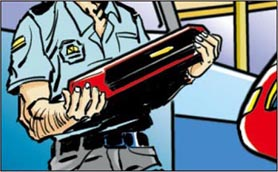
Who is this?
What is he/she doing?
2）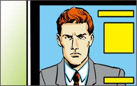
Who is it?
What is he doing?
3）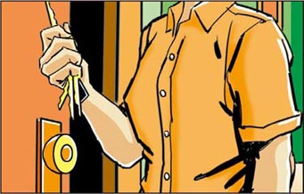
Who is this?
What is he/she doing?
4）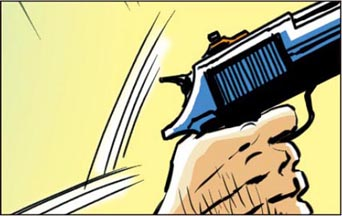
Who is this?
What is he/she doing?
5）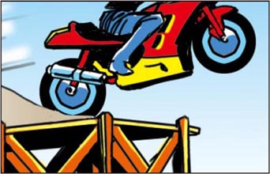
Who is riding this motorcycle?
6）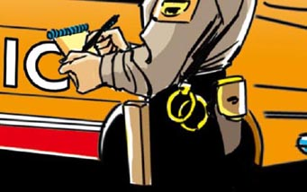
Who is writing?
TRANSLATION 参考译文
TRANSLATION 参考译文
Girl on a Motorcycle
摩托女孩
肯尼正在乘公共汽车横穿美国。一个夏天的夜晚，他乘坐的车停在了加利福尼亚的一个小镇上。
“我想在这儿住一晚。”肯尼对司机说，“这儿有没有汽车旅馆，您知道吗？”
“有，”司机回答，“河对岸有家不错的汽车旅馆，也不贵。”
“那明天有车去旧金山吗？”肯尼问。
“有，”司机说，“每天都有车去。”
肯尼拿着包下了车。
洛杉矶的一条街上，有人正在超市外抢劫一名保安。劫匪骑着摩托车，手里拿着枪。
“把钱给我！”劫匪对保安说。
“好，好！”保安说着把钱交给了劫匪。
然后劫匪骑摩托车跑了，但有个摄像头拍下了这一切。
劫案发生后，超市经理打电话报警。
“是的，”他说，“抢劫……没错，金色长发，骑着摩托车……男的还是女的？不知道……没错，我们有些照片……好的！快来！”
在距离洛杉矶50公里外的小镇上，肯尼走进汽车旅馆，要了个房间。
“23号房。”前台的男服务员说着递给肯尼一把钥匙。
“谢谢。”肯尼说，然后他上楼进了房间。
一小时后，肯尼下楼去吃东西。
“我饿了。”他心想。
他看见一个女孩骑着摩托车到了旅馆。她走到前台，服务员给了她一把钥匙。
“17号房。”服务员说。
“我觉得这张脸很面熟。”肯尼想，“她是哪个名人吗？”
第二天一大早，肯尼打开房间里的电视机。一位新闻播音员正在播报超市劫案新闻。还播放了超市摄像头拍到的照片。
肯尼看着新闻。
“劫匪有一头金色长发，骑着摩托车。”新闻播音员说。
突然，肯尼想起在旅馆前台见到的那个女孩。“是她吗？”他想，“她是劫匪吗？”
肯尼去吃早饭。那个女孩正在靠窗的一张桌子旁吃早饭。肯尼看着她。“是她吗？”他想，“我觉得我认识她，可是……”他向她的桌子走过去。
“我能坐这儿吗？”他问。
女孩抬起头。“嗯……好吧。”她回答。
肯尼坐下来。“我叫肯尼。”他说。
“很高兴认识你。”她说，“我叫梅尔。”
“你是哪里人？”肯尼问。
“旧金山人。”梅尔说，“我今早稍后要回那里去。你是哪里人？”
“波士顿人。”肯尼说，“我正在乘公共汽车横穿美国。我今早稍后也要去旧金山。”
“是吗？”女孩说，“我不喜欢公共汽车。我喜欢摩托车。嘿，不好意思，我得打个电话。”
她起身离开了餐厅。
坐在门边的一个年轻人一直盯着梅尔。
“为什么他老是看她？”肯尼想，“他也认得她？他是不是也觉得她就是劫匪呢？”
肯尼走过去，在年轻人身边坐下。
“你好。”他说，“我叫肯尼·缪尔。”
“你好。”年轻人说，“我叫……内德。”
他们开始交谈。肯尼跟内德说起电视上关于超市劫案的新闻。他向梅尔望去。“你是不是觉得劫匪就是那个女孩？”他问内德。
内德看向她。“我，我不知道。”他说，“也许是吧。”
“我们该怎么办？”肯尼说，“她马上就要离开了。我们报警吧，我觉得就是她。”
“不行！”内德马上说，“不能报警。等等……”
肯尼仔细打量他。“怎么了？你在……害怕什么吗？”他问。
“不是，不过……她可能有枪！”内德说。
“真的是她吗？”肯尼想，“我想弄清楚。也许抢来的钱就在她房间里。”
肯尼走上楼。突然，他又看见了梅尔。她正从17号房间出来。肯尼盯着她。她锁好门，下了楼。
“我怎么才能进入她的房间呢？”他想。
就在这时，肯尼看见了旅馆的一名女服务员。
“劳驾，”肯尼说，“你能帮忙开下我的房门吗？我的钥匙在车里。是17号房间。”
“好的，没问题。”她说着打开了17号房间的门。
“谢谢。”肯尼说，接着进了房间。
肯尼搜遍了整个房间，却没找到抢劫来的钱。
“可能我错怪她了。”他想。
这时他听见有人正用钥匙开门。
是梅尔！
肯尼跑进卫生间。不一会儿，他听见梅尔在打电话。
“嗨，弗兰。”梅尔说，“不，我在汽车旅馆……不，我一个小时内离开……是的，好……”
肯尼小心翼翼地向卫生间外张望。他没法儿到门那儿，但可以到窗户那边。他迅速行动起来。
梅尔放下电话。肯尼透过窗户盯着她。
“我必须离开这儿！”他想。
肯尼不能再回到17号房间，但他可以打开18号房间的窗户。
肯尼爬进18号房间，里面没人。他向房门走去，但这时他看见了一样东西。
“那是什么？”他想，“是……一顶假发？是的，是金色的假发！”
肯尼开始搜房间。
“这里有件黑色的机车外套。”他自言自语道，“这包里又是什么？抢劫来的钱！”
肯尼听见有人进来。他想离开这个房间，但他出不去了。
内德走进房间。他看见了肯尼。
“你在我的房间干什么？”内德问。
这时他看见了金色假发和钱。他又看向肯尼。
“你知道了！”内德说。
“对，我知道了！”肯尼说，“你就是洛杉矶超市劫匪！”
突然，内德从外套里掏出枪。
“不许动！”他说，随即从肯尼手中夺回包。
“你逃不掉的。”肯尼说。
“不，我可以。”内德说。
他一拳打在肯尼头上，然后把他锁在18号房间里。
过了片刻，梅尔正在房间里望着河。突然，她看见一个男人在奔跑。
“他怎么了？”她想，“为什么要跑呢？”
这时，她看见肯尼从隔壁房间出来。
“那——那个男的！”肯尼说，“他是洛杉矶超市劫匪！拦住他，来人哪！”
内德听见肯尼的话，向上看了一眼。然后他跨上摩托车，迅速驾车离去。
“我能拦住他！”梅尔说。
她从自己房间外面爬下来，跑到汽车旅馆前面，骑上自己的摩托车，追赶内德。
梅尔骑着摩托车，朝河边疾驶。到了河边，她驾着摩托车飞越过河，停在内德前面。内德刹不住车，连人带车掉进河里。
“救命！救命！”他大叫，“我不会游泳！”
有人把内德从水里救了出来。越来越多的人从汽车旅馆赶了过来。肯尼向梅尔跑去。
“你没事吧？”他问她。
“嗯，我没事。”她说，“你还好吧？”
“嗯，”肯尼说，“我还好。”
不一会儿，警察赶来带走了内德。肯尼向一位男警察说明事情经过。随后梅尔也向一名女警说明了情况。
“我是不是见过你？”女警问梅尔，“你是名人吗？”
梅尔笑了。“也许你见过我。”她说，“我有时会上电视。”
“现在我想起你来了。”肯尼对梅尔说，“你是梅尔·帕尔默，著名的女特技演员！我有时在电视上看《美国女特技演员》，见过你。”
梅尔笑了。“对，那是我。”她说，“现在，你是想坐我的摩托车去旧金山呢，还是坐公共汽车去？”
“我跟你一起去！”肯尼笑着说，“不过我们骑慢点，好吗？”
封底
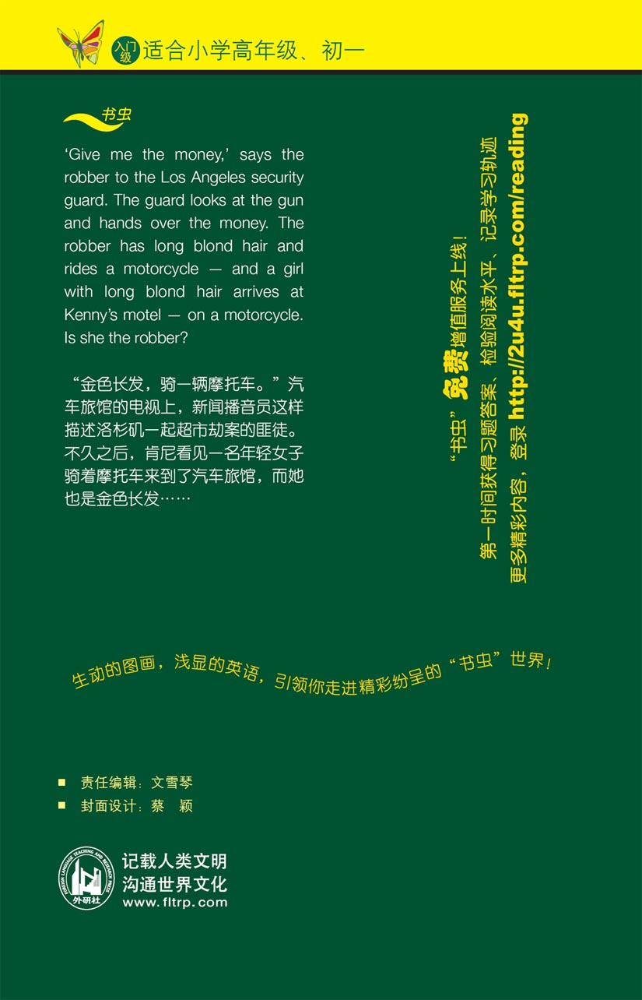